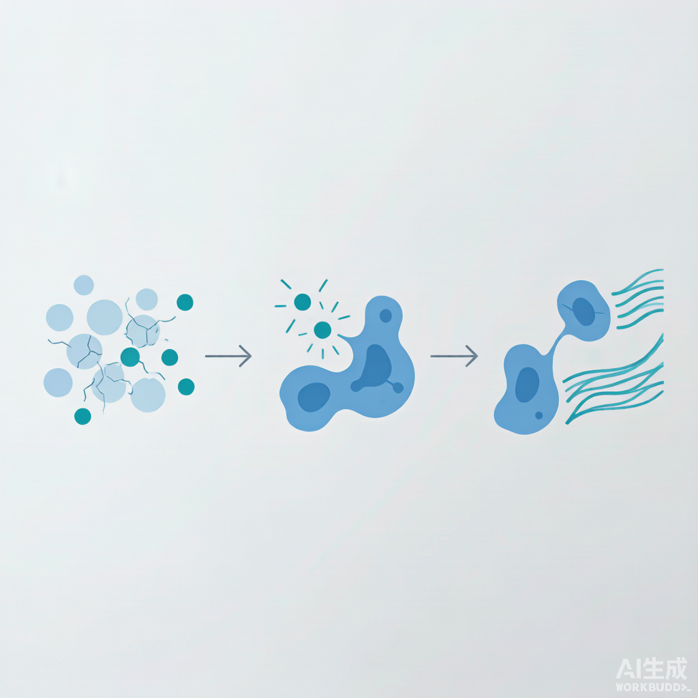

一句话结论（双视角）：工程师视角：PLLA 不是填充剂，是「胶原刺激剂」——可降解聚左旋乳酸微球植入后缓慢降为乳酸，作为损伤样信号激活成纤维细胞、上调 TGF-β，诱导自身 I/III 型胶原新生；工艺命门在粒径（40–63 μm）、复溶充分性与均匀分散，否则结节。产品经理视角：童颜针卖的是「让脸自己长胶原、渐进自然、长效 2 年+」，但它是三类医疗器械、妆字号不能碰，且与「生长因子/EGF」必须划清——讲「再生」要比讲「填充」更稳。
一、机理：为什么叫「胶原刺激剂」而不是「填充剂」
聚左旋乳酸（PLLA）是一种可吸收的合成高分子，1999 年首个童颜针 Sculptra 在海外上市、2004 年起广泛用于面部容积缺失（最初是 HIV 相关脂肪萎缩）。它和玻尿酸「占位即见效」完全不同：PLLA 微球被注射到真皮深层/皮下后，并不靠体积撑起凹陷，而是作为一个可被降解的「支架」缓慢存在，逐步水解为乳酸；乳酸本身是一种损伤样信号，激活局部成纤维细胞、上调 TGF-β 通路，从而诱导自身 I 型与 III 型胶原持续新生。效果因此渐进——通常 2–4 周启动、2–3 个月达峰，并因新生胶原持续存在而维持 2 年甚至更久。
二、前沿证据：机制、粒径与国内市场都已坐实
- 机制综述坐实：MDPI《Cosmetics》2026 综述把 PLLA-SCA 明确定位为「可注射、可生物降解、非永久性的生物刺激剂（biostimulator）」，强调其通过刺激内源性胶原实现容积恢复，而非占位。
- 通路明确：eClinicalLife 2024 综述聚焦「胶原刺激机制」，指出聚左旋乳酸通过 TGF-β 等通路显著增强成纤维细胞的胶原合成能力，并梳理了临床安全边界。
- 粒径是关键工程参数：文献普遍认为 40–63 μm 是较优窗口——粒径过小易被快速清除、刺激不足；过大则易聚集形成皮下结节（nodule）。粒径分布均一性直接决定安全与效果。
- 国内赛道成形：2021 年 4 月长春圣博玛「艾维岚」获批，开国产童颜针先河；至 2026 年已形成塑妍萃（Sculptra/全球首款、FDA 认证）、艾维岚、濡白（爱美客）等多款混战的「百亿再生医美」格局。
三、工程师视角：配方与工艺落地速查表
表 1 PLLA 童颜针体系设计要点（冻干粉复溶 / 与 HA 联用）
| 靶点 / 角色 | 推荐原料与形态 | 添加量 / 工艺 | 配伍 / pH / 稳定要点 |
|---|---|---|---|
| 胶原再生引擎 | PLLA 微球（冻干粉，复溶后悬浮） | 150–200 mg/mL（Sculptra 约 150 mg/瓶） | 粒径 40–63 μm；复溶后用无菌水/生理盐水充分水合静置 ≥24 h，防团聚结节 |
| 均匀分散 / 即时容积 | 透明质酸（HA）或甘露醇 | 与 PLLA 共悬浮，HA 0.5–2% | HA 改善微球悬浮与即时填充感；与 PLLA 分层注射（深层 PLLA + 浅层 HA） |
| 内源性信号 | 乳酸（PLLA 降解产物） | 无需额外添加 | PLLA 降解即原位产生乳酸信号，激活成纤维细胞；pH 微酸环境，配伍忌强碱 |
| 术后居家维持 | 视黄醇 / 信号肽类（机构后居家） | 驻留型精华 0.1–1% | 避开术后即刻创伤期，稳定期用于维持胶原；pH 5.5–6.5 |
| 工艺红线 | 无菌冻干 + 粒径控制 | 无菌线、粒径分布 CV<阈值 | 复溶均匀、避免大颗粒团聚是防结节第一要务；全程无菌防肉芽肿 |
配方逻辑：PLLA 负责「深层容积 + 长效胶原再生」，HA 负责「即时填充 + 改善微球分散」，二者常分层施用。工程师最该盯的两个工艺点是——复溶静置时间（水合不足直接增加结节率）与粒径分布均一性（决定刺激效率与安全）。冻干体系本身还要保证无菌与再分散性，这是三类械注册的核心评价项。
四、产品经理视角：市场机会与消费者沟通
国内「童颜针」已是百亿级再生医美赛道：艾维岚 2021 年首获批开启国产化，2026 年塑妍萃、艾维岚、濡白等多款同台竞争。核心消费者心智是「渐进、自然、长效、是自己的胶原」——这恰好契合当下对「馒化脸/假面感」的反弹。合规边界也很清晰：童颜针属三类医疗器械，普通化妆品不能宣称；且必须与「生长因子 / EGF」彻底划清（后者在化妆品中明确禁用），PLLA 才是合规的「再生」材料等替代方向之一。
产品经理视角：消费者听得懂的话：别讲「聚左旋乳酸微球缓释激活成纤维细胞」。换成：「不是把东西填进去，是让脸自己慢慢长胶原——两周起慢慢出、两三年都在」。把产品定位成机构的「疗程伴侣」（按疗程打、居家维持），比单次即时填充的复购逻辑更稳。切记不要承诺「打完立刻明显」，PLLA 是渐进的，过度承诺只会带来客诉。
五、合规红线：这些边界不能踩
- 三类医疗器械属性：童颜针（PLLA 注射剂）属三类械，普通化妆品/妆字号产品严禁宣称「童颜针、胶原再生、填充」等医疗功效语境。
- 禁用「生长因子 / EGF」叙事：国家药监局明确 EGF 禁用于化妆品；PLLA 是合规的胶原再生材料，宣传上要与「生长因子修复」严格区分，避免违规联想。
- 复配与宣称需有注册/临床依据：「胶原再生、容积维持」等属于医疗/功效宣称，必须落在械字号注册范围与临床证据内，不能跨品类挪用到妆品。
六、今日行动清单（研发 + 产品）
- 研发：立项 PLLA 冻干复溶体系（粒径 40–63 μm、复溶 ≥24 h 水合工艺）+ 与 HA 分层联用方案，先做离体再分散性与粒径分布验证。
- 评价：以超声影像 / 组织学胶原密度、容积维持时长做人体验证，呼应刘玮《皮肤科学与化妆品功效评价》方法学。
- 合规：全程走三类械注册路径，宣称锁定「胶原刺激 / 容积恢复」医疗语境，绝不在妆品线借用。
- 产品：与轻医美机构谈「疗程伴侣」绑定，用「让脸自己长胶原、渐进自然」消费者语言，避开 EGF/即刻明显的话术。
- 理论锚点：机制参考 MDPI 2026 与 eClinicalLife 2024 综述；活性物框架参考 Draelos《Cosmeceuticals》再生章节。
附图

参考资料与出处链接
- Poly-L-lactic Acid (Sculptra®): A Regenerative Aesthetic Biostimulator（MDPI Cosmetics 2026,13(3),103） https://www.mdpi.com/2079-9284/13/3/103
- Contemporary insights into the collagen-stimulating mechanism of poly-L-lactic acid（eClinicalLife 2024） https://www.elifecycle.org/archive/view_article_pubreader?pid=lc-4-0-10
- Injectable Poly-l-Lactic Acid for Body Aesthetic Treatments: An Evidence-Based Consensus（Springer Aesth Plast Surg 2024） https://link.springer.com/article/10.1007/s00266-024-04499-9
- Biodegradable PLLA/PLGA Microspheres/Collagen Composites for Soft Tissue Augmentation（ScienceDirect 2024） https://www.sciencedirect.com/science/article/pii/S1359836824004141
- 国内获批童颜针怎么选？塑妍萃、艾维岚等对比与指南（搜狐 2026） https://www.sohu.com/a/1068883751_120146690
- 童颜针品牌怎么选？塑妍萃、艾维岚、濡白天使对比（腾讯新闻 2026） https://news.qq.com/rain/a/20260526A096HK00
- PLLA 微球真皮填充剂在体内刺激胶原蛋白合成（Aesthetic Plastic Surgery，搜狐 2025 文献分享） https://www.sohu.com/a/960338225_121967410